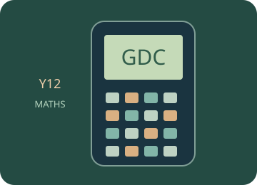

Calculator essentials
Learn the keys, navigation and settings before applying them to a topic.
Start with the mathematical explanations and worked examples below, then choose a guided calculator exercise. The trainer highlights the next physical key; afterwards, repeat in free practice and interpret your result.

Build the idea, one step at a time.
A calculator returns results for the expression and settings you give it. Your first task is to translate a mathematical statement accurately: grouping, negative signs, fractions and angle units all matter. A long decimal display does not make an input or a model correct.
Estimate before calculating, enter brackets deliberately and keep enough precision for later steps. Distinguish a stored value from the rounded number shown in a written answer. For trigonometry, check radians or degrees; for a graph, check the viewing window and the domain before concluding that a feature is absent.
01 · Translate the expression before pressing keys
The displayed result belongs to the entered expression, not to what you intended to enter. Group a whole numerator or denominator with brackets, and distinguish a negative number from a subtraction operation. A fraction bar groups expressions above and below it.
02 · Control angle units, domain and window
Degrees divide a turn into 360 parts; radians relate arc length to radius. A trigonometric input must match the calculator mode. A graph window only shows part of a function: a missing intersection may lie outside it or outside a permitted domain.
03 · Keep precision until the final interpretation
Rounding an intermediate value can change later calculations. Store or reuse unrounded values where practical, then round the final answer according to the question and context. Exact forms such as fractions or radicals retain information that a short decimal may omit.
You can read these explanations without operating the simulator. The practical activities, games and revision below let you apply the ideas and check your reasoning.
Now investigate →Use the calculator, one key at a time.
Loading the calculator exercises…
Related manual procedures
The source trainer contains 42 skill pages. Reviewed procedures and outlines awaiting physical-device verification are labelled separately. A guided simulator example does not certify every menu on a physical calculator.
Practise, then explain.
Predict the result, follow the highlighted keys and interpret the calculator’s answer. This is practice: calculator actions are not sent to the teacher dashboard. These calculator activities support the examples and explanations in your class lessons.
Open the free calculator →